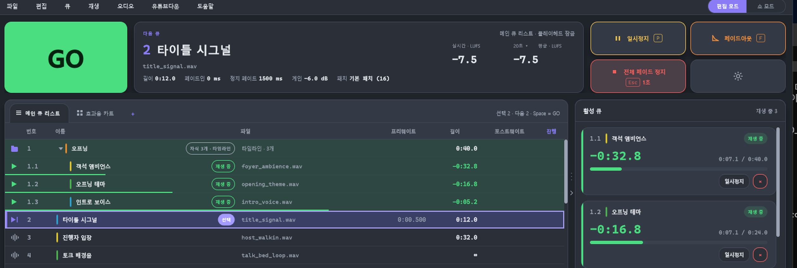

Enqueue 앤큐
큐 순서대로 소리를 내보내는 프로그램
- 요구 사항
- Windows 10 / 11 (64비트)
- 기타
- 바뀐 점 · GitHub 릴리스
설치할 때 Windows가 ‘알 수 없는 게시자’ 경고를 띄웁니다. 추가 정보 → 실행을 누르면 됩니다. 아직 코드 서명을 하지 않아서 그렇습니다.
주요기능
- ASIO 지원
- 오디오 멀티채널 지원 (ASIO 에서만 활성화)
- 모든 큐에 별도로 VST3 인서트 가능
- 마스터 채널에 별도 VST3 인서트 가능
- 실시간으로 파형에서 페이드 조절가능
- 폴더 큐 리스트 지원
비용 : 완전 무료
